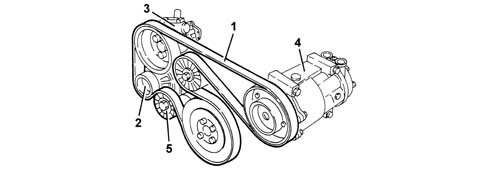
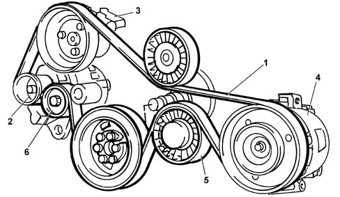

Introduction - VARIOUS ENGINE COMPONENT CONTROLS
- Path
- Descriptions > 10 ENGINE > 1092 VARIOUS ENGINE COMPONENT CONTROLS > Introduction - VARIOUS ENGINE COMPONENT CONTROLS
- Kind
- system description
- Applies to
- all engines; all production periods
- Interactive page
- https://sloeber94.github.io/elrnDB-a156/en/#/3239204
Applies to: engines: 1.9 JTD 16v; all production periods
COMPOSITION
STRUCTURE
The single engine components Poly-V type belt (1) drives the alternator (2), the power assisted steering pump (3) and, where fitted, the air conditioning compressor (4).
There is an automatic tensioner (5) which means that there are no planned maintenance operations.
The crankshaft pulley includes a flexible sector which reduces crankshaft torsional vibrations and stress on the belt and consequently on the engine auxiliary components.

Applies to: engines: 2.4 JTD 20v; all production periods
COMPOSITION
STRUCTURE
The single engine components Poly-V type belt (1) drives the alternator (2), the power assisted steering pump (3) and the air conditioning compressor (4).
There is an eccentric tensioner (5) for pre-loading and an automatic tensioner (6) which means that planned maintenance operations are no longer necessary.
The crankshaft pulley includes a flexible sector which reduces crankshaft torsional vibrations and stress on the belt and consequently on the engine auxiliary components.
